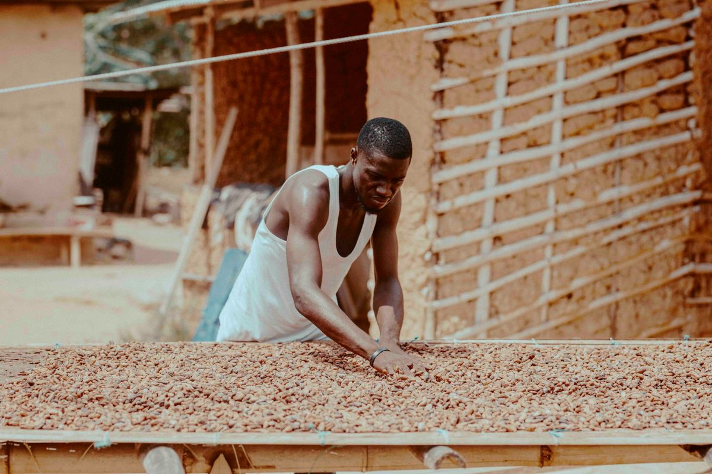
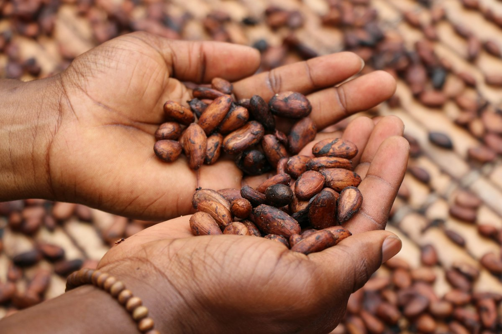
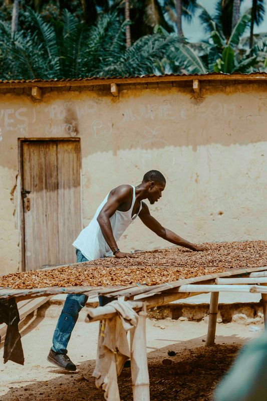

SOPROCACAM COOP-CA n'est pas seulement un négociant : nous cultivons. Nos plantations de cacao et de café nous donnent une connaissance directe de la terre, des variétés et des saisons. Cette expérience guide ensuite nos choix auprès des producteurs de la coopérative et dans nos achats à l'étranger.
Demander une visite de nos plantations

Des fèves fermentées et séchées issues de nos propres parcelles, dans les grandes régions cacaoyères du Cameroun.
Voir le cacao
Principalement cultivé dans les régions du Littoral, du Centre, du Sud et de l'Est. Caractère fort, idéal pour les mélanges.
Voir le café
Cultivé en altitude sur les hauts plateaux de l'Ouest et du Nord-Ouest. Arômes délicats et complexes.
Voir le caféDésherbage, taille, gestion de l'ombrage pour préserver la fertilité du sol.
Suivi sanitaire des arbres pour garantir un bon développement des cabosses.
Cueillette à maturité pour garantir la qualité des fèves et des cerises.
Fermentation et séchage du cacao ; séchage et préparation du café.



Photos réelles de l'entreprise à intégrer dès disponibilité.
Demander une visite de nos plantations